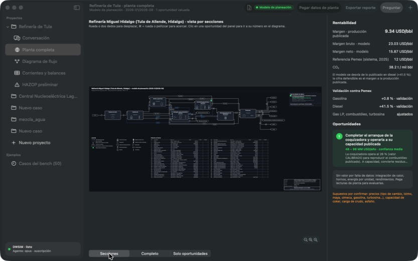
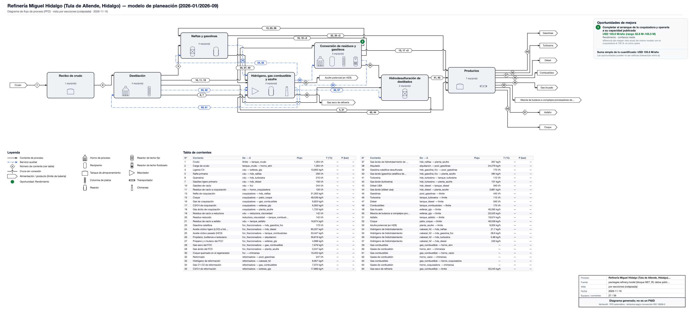

Ask in plain language. AlchemAI builds the process, solves it in deterministic engineering engines, and answers with the explanation, the profitability, the flow diagram and the improvement opportunities marked on it. Every number comes from a solver or a cited source, never from the language model.

Streams, reactors, rigorous columns, recycles. Solved in DWSIM and BioSTEAM, with closed mass and energy balances as evidence.
Biodiesel, sugarcane, corn and cellulosic ethanol, refinery planning models and a steam-cycle power plant, each validated against published figures.
Equipment cost, operating cost, NPV and minimum selling price. Suggested prices carry source, period and date, and are flagged as assumptions.
Drawn by the engine from the solved model, with equipment symbols, stream tables and opportunities marked where they occur.
Paste your plant readings; a scanner compares them against benchmarks and reports each opportunity with a value range and a confidence level.
Deterministic rules on the process graph, checked against published HAZOP studies, including held-out cases.

A native macOS app that is the screen of the engine: conversation with live tool calls, flow diagram, streams and balances, whole-plant view and PDF report. Signed and notarized. The engine runs locally on the user's Mac; the language model is reached with the user's own account.
Status: pre-release. The refinery and power-plant models are demonstrations built on public data, not audits of those plants.